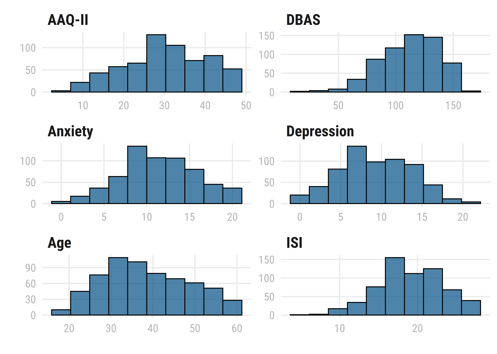
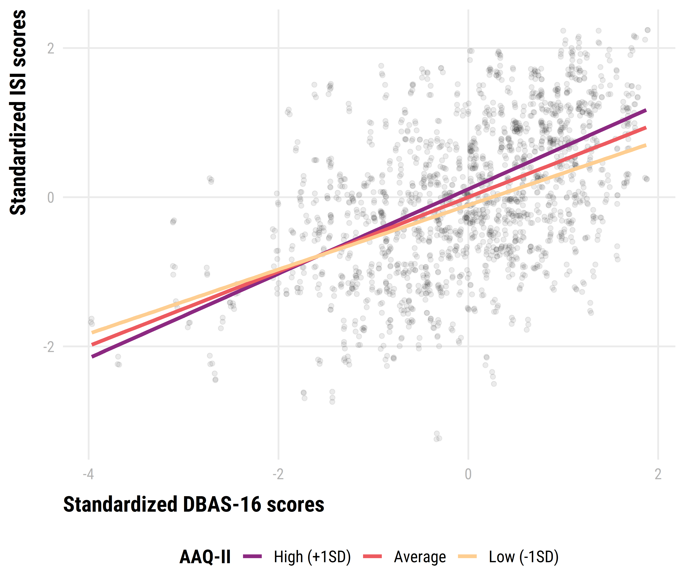

Lower psychological flexibility can enhance the effects of dysfunctional beliefs on insomnia severity.
The association between sleep-related cognitions, psychological flexibility, and insomnia symptoms
Marwin M. I. B. Carmo 1
@marwincarmo
marwin@usp.br
Renatha El Rafihi Ferreira 1
rerafihi@usp.br
1 Department of Psychiatry, University of São Paulo
Introduction
The cognitive-behavioral model of insomnia proposes that arousal, cognitions, behaviors, and perceived consequences play an important role in maintaining insomnia symptoms. The metacognitive model of insomnia expands this idea by defining cognitive activity as primary arousal and how one interprets those thoughts as a secondary arousal. Because primary and secondary processes mutually influence each other, the content of maladaptive sleep-related thoughts can impact the maintenance of insomnia disorder more strongly if one is rigidly attached to them.
Objective
To investigate if psychological inflexibility moderates the relationship between dysfunctional beliefs about sleep and insomnia severity.
Methods
Data were collected from online surveys responded by 629 adults, aged 18 to 59 years, who reported experiencing insomnia symptoms. Participants completed self-report questionnaires, including:
- Hospital Anxiety and Depression Scale (HADS);
- Insomnia Severity Scale (ISI);
- Dysfunctional Beliefs and Attitudes about Sleep Scale (DBAS-16);
- Acceptance and Action Questionnaire (AAQ-II).
All continuous predictors were standardized prior to data analysis. A linear model (estimated using OLS) was fitted to predict ISI scores from DBAS-16 and AAQ-II with age, sex and HADS subscales as covariates:
\[ IGI \sim Age + Sex + HADSA + HADSD + DBAS\times AAQII \]
Results
| N/Mean (%/SD) | |
|---|---|
| Age (years) | 38 (10.1) |
| Gender | |
| Female | 492 (78.2) |
| Male | 137 (21.8) |
| Race/ethnicity | |
| Asian | 31 (4.93) |
| Black | 154 (24.5) |
| Other/Not informed | 5 (0.795) |
| White | 439 (69.8) |
| Education | |
| \(\le\) 12th grade | 62 (9.86) |
| College degree or higher | 462 (73.4) |
| Some college | 105 (16.7) |
| Region of origin | |
| Central-West | 28 (4.45) |
| North | 11 (1.75) |
| Northeast | 43 (6.84) |
| South | 53 (8.43) |
| Southeast | 494 (78.5) |
| Sleep Medication | |
| 1-5 days a week | 141 (22.4) |
| 6-7 days a week | 234 (37.2) |
| Don’t use | 254 (40.4) |

Figure 1: Distribution of continuous variables in the model.
The results of the regression indicated that the model significantly predicted ISI scores (F(621, 7) = 42), p < 0.001, \(R^2_{adj}\) = 0.31), accounting for 31% of the variance.
| Coef. | Std.Error | |
|---|---|---|
| Age | 0.003 [-0.003, 0.010] | 0.003 |
| Sex | 0.027 [-0.131, 0.185] | 0.080 |
| HADS-A | 0.149 [0.057, 0.241]** | 0.047 |
| HADS-D | 0.071 [-0.023, 0.165] | 0.048 |
| DBAS-16 | 0.393 [0.317, 0.469]*** | 0.039 |
| AAQ-II | 0.107 [0.006, 0.208]* | 0.051 |
| DBAS-16 x AAQ-II | 0.068 [0.009, 0.127]* | 0.030 |
| * p < 0.05, ** p < 0.01, *** p < 0.001 | ||

Figure 2: Boxplots, so hot right now!
Conclusion
Insomnia severity scores were influenced by higher scores on anxiety, dysfunctional beliefs about sleep and psychological inflexibility. The significant interaction effect indicates that the prediction effect of dysfunctional beliefs about sleep may become more positive for additional levels of psychological inflexibility.
Remarks
This poster was created using posterdown package (Thorne, 2019). Full reproducible code available at https://bit.ly/postercbs
References
Harvey, A. G. (2002). A cognitive model of insomnia. Behaviour Research and Therapy, 40(8), 869–893. https://doi.org/fwxq35
Morin, C. M., Vallières, A., & Ivers, H. (2007). Dysfunctional Beliefs and Attitudes about Sleep (DBAS): Validation of a Brief Version (DBAS-16). Sleep, 30(11), 1547–1554. https://doi.org/10.1093/sleep/30.11.1547
Ong, J. C., Ulmer, C. S., & Manber, R. (2012). Improving sleep with mindfulness and acceptance: A metacognitive model of insomnia. Behaviour Research and Therapy, 50(11), 651–660. https://doi.org/f4fczt
Thorne, B. (2019). Posterdown: Generate PDF conference posters using r markdown. https://github.com/brentthorne/posterdown
Xie, Y., Lesur, R., Thorne, B., & Tan, X. (2021). Pagedown: Paginate the HTML output of r markdown with CSS for print. https://github.com/rstudio/pagedown